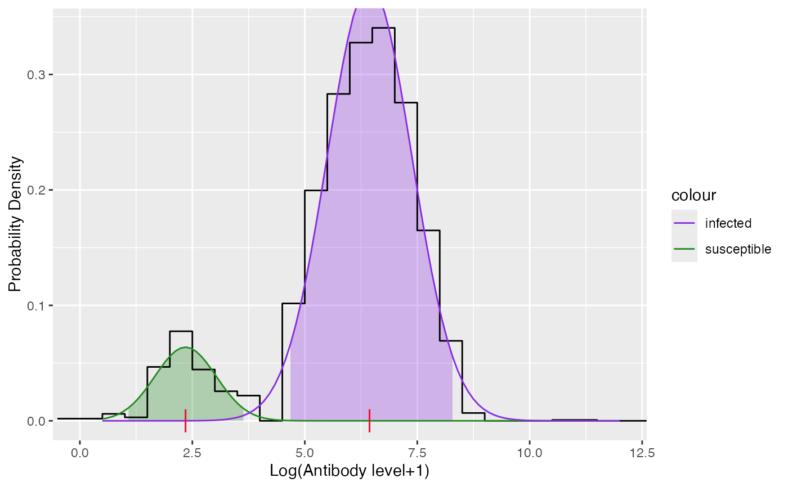

Refers to section 11.1 - 11.4
Arguments
- antibody_level
- vector of the corresponding raw antibody level
- breaks
- number of intervals which the antibody_level are grouped into
- pi
- proportion of susceptible, infected
- mu
- a vector of means of component distributions (vector of 2 numbers in ascending order)
- sigma
- a vector of standard deviations of component distributions (vector of 2 number)
Value
a list of class mixture_model with the following items
- df
the dataframe used for fitting the model
- info
list of 3 items parameters, distribution and constraints for the fitted model
- susceptible
fitted distribution for susceptible
- infected
fitted distribution for infected
Examples
df <- vzv_be_2001_2003[vzv_be_2001_2003$age < 40.5,]
data <- df$VZVmIUml[order(df$age)]
model <- mixture_model(antibody_level = data)
#> Warning: The optimization process terminated because either the estimates are approximate local optimal solution or steptol is too small
model$info
#>
#> Parameters:
#> pi mu sigma
#> 1 0.1088 2.349 0.6804
#> 2 0.8912 6.439 0.9437
#>
#> Distribution:
#> [1] "norm"
#>
#> Constraints:
#> conpi conmu consigma
#> "NONE" "NONE" "NONE"
#>
plot(model)
